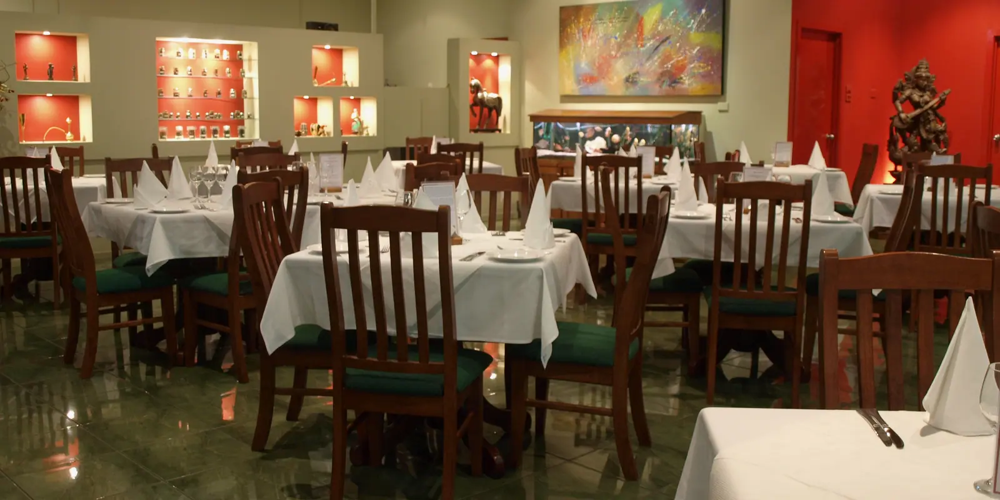
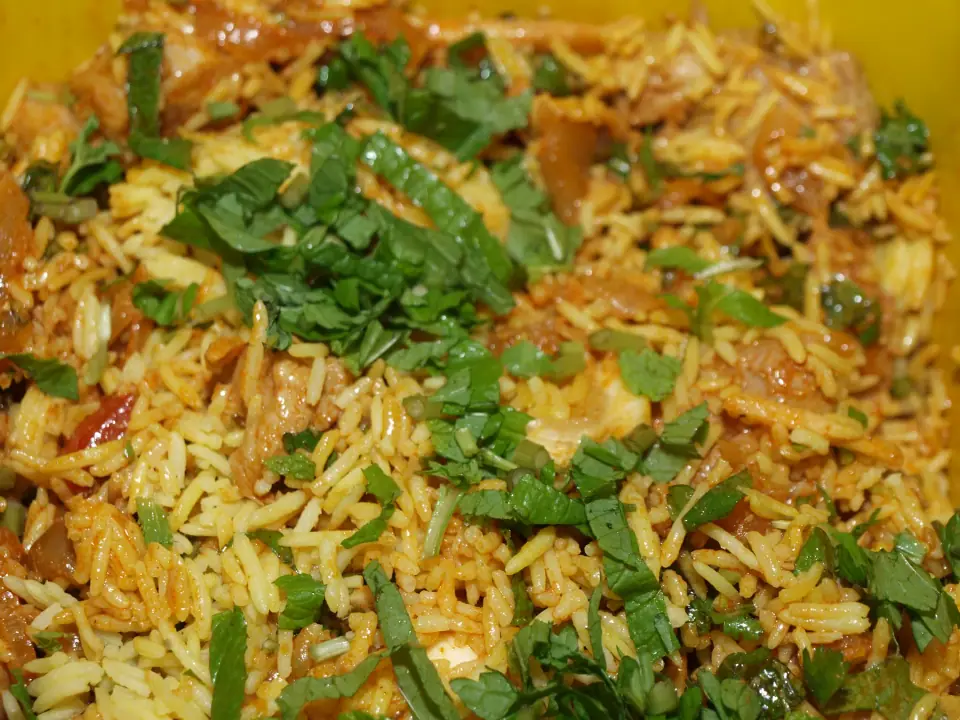
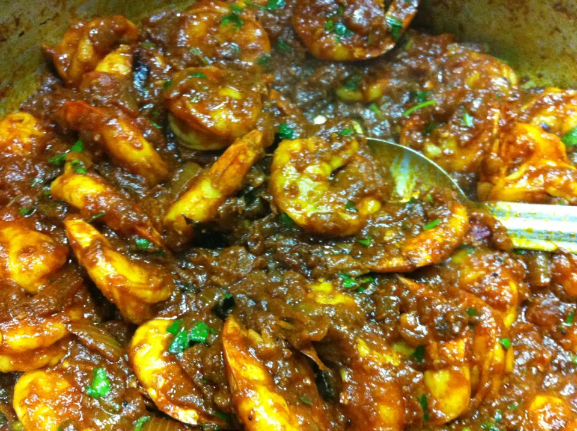
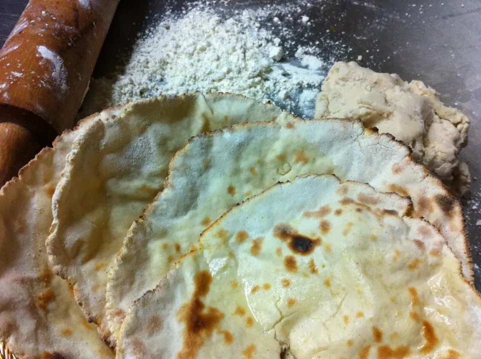
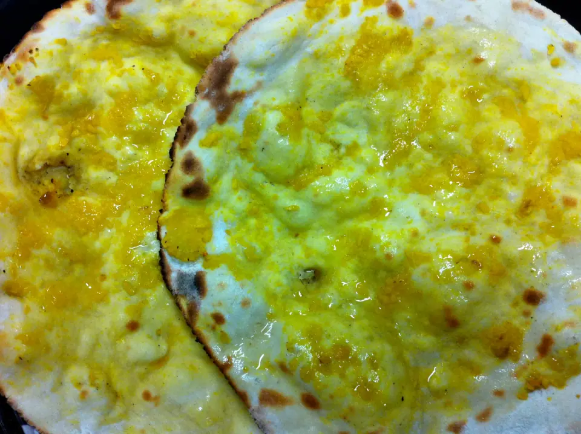

Indian & North Indian · Narre Warren South
Indian cuisine, pure and simple
Arya means pure and this is the ethos behind this restaurant and its cuisine.
- Now
- HoursMon to Wed 4:30pm–9:30pm
Thu 11:30am–9:30pm
Fri & Sat 11:30am–10pm
Sun 11:30am–9:30pm - Address10/101 Seebeck Drive, Narre Warren South VIC 3805
- Phone03 9705 8305
About us
We are passionate about what we eat and respect the balance between food production, animal welfare and the environment.
Arya offers fresh, simple, home-style cooked dishes, and our chefs work closely with local food producers who share our philosophy.

Gallery
Delight your senses



Find us
At Seebeck Drive, Narre Warren South
| Monday | 4:30pm–9:30pm |
|---|---|
| Tuesday | 4:30pm–9:30pm |
| Wednesday | 4:30pm–9:30pm |
| Thursday | 11:30am–9:30pm |
| Friday | 11:30am–10pm |
| Saturday | 11:30am–10pm |
| Sunday | 11:30am–9:30pm |
- Order online for takeaway or delivery.
- Licensed and BYO, wine only.
- Gluten free naan is cooked in the tandoor and can be flavoured with garlic or spice.